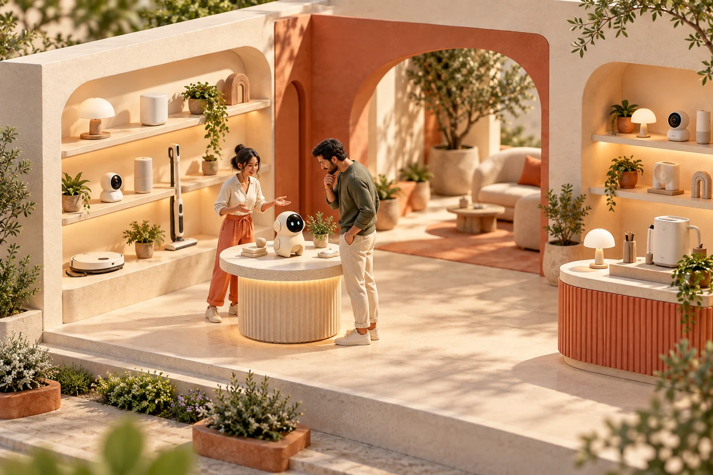
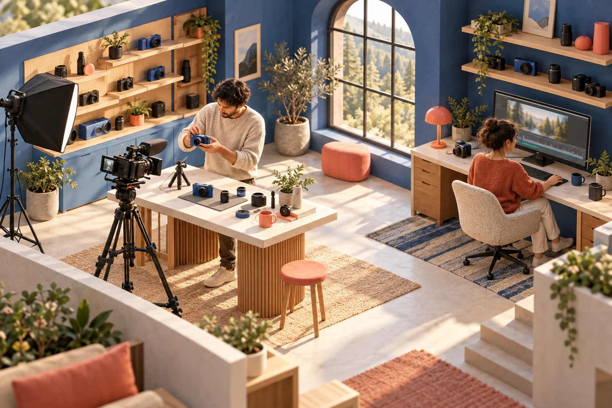
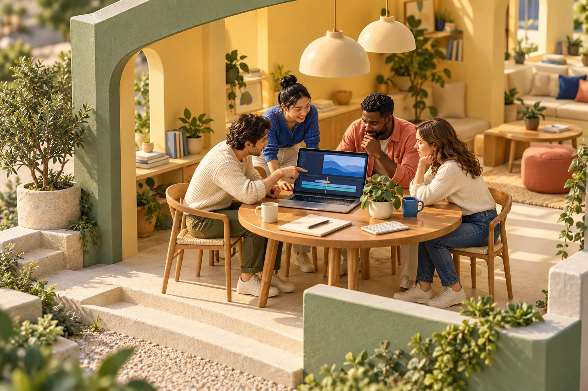

让新品，找到值得先试的入口。
从 Demo 到量产前后，先探索真实需求、准备合作，再在具备交付条件时启动首销。
带一款产品来聊聊 ↗联野 · AI 时代的新品起销网络
让人看见。让人试过。让品牌接住。
原创场景与产品示意01 / 新品去哪里卖
有人擅长内容，有人经营社群，
也有人，让买家当场试一试。

样机、产品事实和服务说明一起交给门店，让介绍有依据。
快闪、预约、陈列、实测、试用是合作形式；内容、社群、门店是销售路径。具体形式按产品与经营者条件约定。
继续往下，展开每一个细分方向
从具体经营者出发，
看业务、看场景，也看合作要解决的问题。
没有找到这组参考。可以换一个分类，或清除关键词。
公开市场研究参考，包含零售经营者、内容机构、社群与平台入口；不代表联野客户、签约伙伴或可直接调用的渠道。历史资料与本次核查分别标注，具体准入、授权和经营效果仍需确认。
02 / 从购买前的疑问，选择第一步
先弄清买家要亲眼看到什么，
再决定，把产品带到哪里。
示意工具界面 / 预设素材


界面演示整理与试用思路，不运行真实 AI 生成。
响应方式、使用限制、日常维护，都值得现场试。一次预约试玩，比把参数讲得更长更有用。
让感兴趣的人实际互动，再由品牌回答功能与服务问题。
三种无品牌产品与界面均为情境示意，不是客户案例或能力证明。这里演示不同购买疑问对应的起点，不代表每个品类只有一种销售路径。
03 / 联野具体做什么
让介绍有依据，体验有安排，
购买有去处，结果有记录。
样机 · 产品事实
交付与服务条件
找具体的买家问题。
有兴趣，进入品牌入口。
依据真实需求、成交与投入，决定下一步。
品牌提供样机和确认过的事实。先看买家真正关心什么，再讨论从哪条路径开始。
销售路径建议、买家问题、产品介绍与体验提纲。
候选伙伴沟通、样机与活动安排、责任和费用条件。
真实反馈、成交与退款、投入记录，以及下一步建议。
预设过程演示。AI 辅助资料整理、场景比较和材料准备；事实由人确认，合作由人推进。实际付费、成交、AI 效率增量与网络复用均待验证。
一端是好产品，一端是真实的受众与场景
从 Demo 到量产前后，先探索真实需求、准备合作，再在具备交付条件时启动首销。
带一款产品来聊聊 ↗找到适合自己经营方式的新品，明确品牌支持与服务责任，按实际服务和约定贡献获得收益。
聊聊你的受众或空间 ↗先确认产品阶段、一个具体买家问题，以及能够提供的样机与服务条件。Demo 阶段优先做体验和需求反馈，具备合规与交付条件后再讨论首销；通过实际服务推进合作。
按实际服务范围约定服务费；涉及成交或增量价值时，事先明确归因、退款处理、费用上限与结算周期。目前没有经过验证的统一价格、销量或收益保证。
它们是来自公开资料的市场经营者、机构与社区入口，不是联野客户或签约伙伴。公开业务、会员规模和指定品牌授权，都不等于其他新品可准入、可触达或能成交。每项合作需要具体核实。
处于首批合作验证阶段。AI 辅助资料整理、场景比较与材料准备；页面的动态与软件界面是预设演示，没有实时推理或真实订单。客户付费、销售成绩、AI 效率与可复制增长尚需真实项目验证。
从一款产品，一个场景开始
第一次沟通，带上这几件事就好：